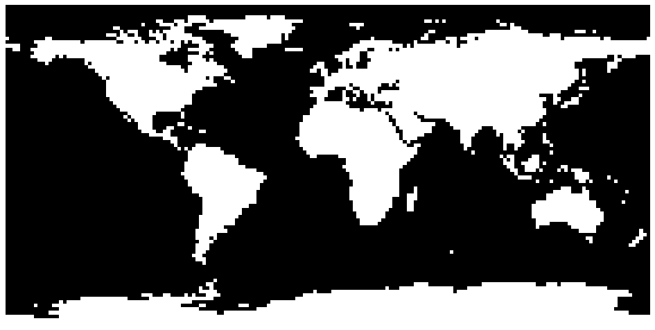
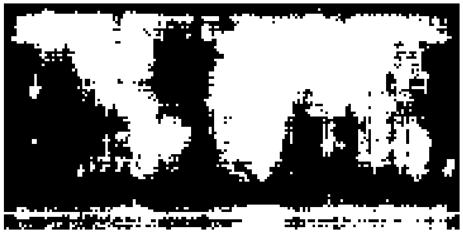
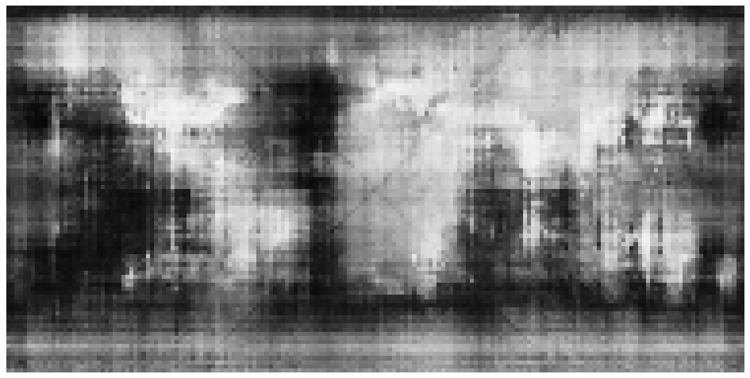
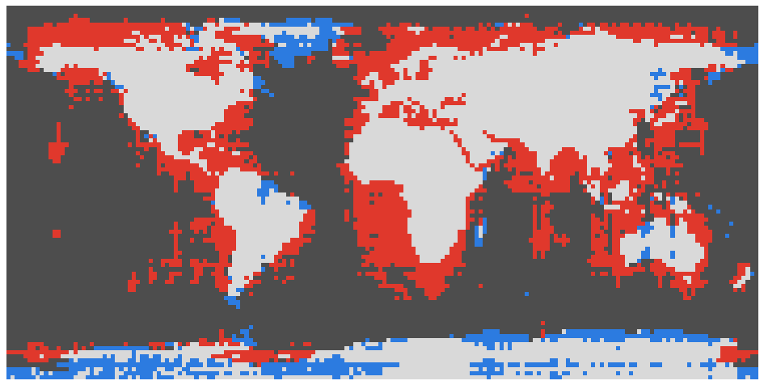

<title>How Jev Sees the Earth</title>
<link rel="preconnect" href="https://fonts.googleapis.com">
<link rel="preconnect" href="https://fonts.gstatic.com" crossorigin>
<link rel="stylesheet" href="https://fonts.googleapis.com/css2?family=Barlow+Condensed:wght@500;600;700&family=Source+Serif+4:ital,opsz,wght@0,8..60,400;0,8..60,600;1,8..60,400&family=IBM+Plex+Mono:wght@400;500&display=swap">
<style>
/* Layout: one reading column of about 66ch; figures break out to a wider measure, like plates in an atlas. */
:root {
  --paper: #f3f5f4;
  --plate: #ffffff;
  --ink: #18212a;
  --muted: #5a6670;
  --rule: #d3dadb;
  --sea: #1f4e79;
  --survey: #b8372a;
  --survey-soft: #e9c3bd;
  --track: #e3e8e8;
  --display: "Barlow Condensed", "Arial Narrow", "Helvetica Neue", Arial, sans-serif;
  --body: "Source Serif 4", Georgia, "Times New Roman", serif;
  --mono: "IBM Plex Mono", ui-monospace, SFMono-Regular, Menlo, monospace;
  --measure: 66ch;
  --wide: 1080px;
}
@media (prefers-color-scheme: dark) {
  :root:not([data-theme="light"]) {
    --paper: #0f1417; --plate: #182025; --ink: #e2e7e9; --muted: #9aa6ad; --rule: #2b353b;
    --sea: #86b6e2; --survey: #ec6f5e; --survey-soft: #5a2c27; --track: #222b31; color-scheme: dark;
  }
}
:root[data-theme="dark"] {
  --paper: #0f1417; --plate: #182025; --ink: #e2e7e9; --muted: #9aa6ad; --rule: #2b353b;
  --sea: #86b6e2; --survey: #ec6f5e; --survey-soft: #5a2c27; --track: #222b31; color-scheme: dark;
}

* { box-sizing: border-box; }
body {
  background: var(--paper); color: var(--ink);
  font-family: var(--body); font-size: 1.0625rem; line-height: 1.6;
  padding-inline: 16px; padding-block: 0 4rem;
}
main { display: grid; gap: 0; }
main > * { width: 100%; max-width: var(--measure); margin-inline: auto; }
main > .wide { max-width: var(--wide); }

h1, h2, h3 { font-family: var(--display); font-weight: 600; line-height: 1.05; text-wrap: balance; margin: 0; }
h1 { font-size: clamp(2.6rem, 7vw, 4.6rem); letter-spacing: 0.005em; }
h2 { font-size: clamp(1.8rem, 4vw, 2.4rem); margin-top: 3.5rem; padding-top: 1.25rem; border-top: 1px solid var(--rule); }
h3 { font-size: 1.3rem; margin-top: 2rem; }
p { margin: 1rem 0 0; }
.label {
  font-family: var(--display); font-weight: 600; font-size: 0.85rem;
  text-transform: uppercase; letter-spacing: 0.14em; color: var(--muted);
}
.coord { font-family: var(--mono); font-size: 0.92em; }
code { font-family: var(--mono); font-size: 0.86em; }
a { color: var(--sea); }
a:focus-visible, button:focus-visible, input:focus-visible { outline: 2px solid var(--survey); outline-offset: 2px; }

header { padding-top: 3rem; }
header .label { display: block; margin-bottom: 0.75rem; }
.standfirst { font-size: 1.2rem; color: var(--ink); max-width: 60ch; }

.figures {
  display: grid; grid-template-columns: repeat(auto-fit, minmax(150px, 1fr)); gap: 1px;
  background: var(--rule); border: 1px solid var(--rule); margin-top: 2rem;
}
.figures div { background: var(--paper); padding: 0.9rem 1rem; display: grid; gap: 0.2rem; align-content: start; }
.figures b { font-family: var(--display); font-size: 2.2rem; font-weight: 600; line-height: 1; font-variant-numeric: tabular-nums; }
.figures b.jev { color: var(--survey); }
.figures span { font-size: 0.85rem; color: var(--muted); line-height: 1.35; }

figure { margin: 1.5rem 0 0; }
figure img { display: block; width: 100%; height: auto; background: #fff; border: 1px solid var(--rule); }
figcaption { font-size: 0.85rem; color: var(--muted); margin-top: 0.4rem; }
.pair { display: grid; grid-template-columns: repeat(auto-fit, minmax(300px, 1fr)); gap: 1rem 1.25rem; margin-top: 0.5rem; }
.pair figure { min-width: 0; }
.trio { display: grid; grid-template-columns: repeat(auto-fit, minmax(260px, 1fr)); gap: 1rem 1.25rem; margin-top: 0.5rem; }

/* Swipe comparison */
.swipe { position: relative; margin-top: 2rem; border: 1px solid var(--rule); background: #fff; aspect-ratio: 945 / 476; max-width: 100%; overflow: hidden; }
.swipe img { position: absolute; inset: 0; width: 100%; height: 100%; display: block; }
.swipe .top { clip-path: inset(0 calc(100% - var(--x, 50%)) 0 0); }
.swipe .edge { position: absolute; top: 0; bottom: 0; left: var(--x, 50%); width: 2px; background: var(--survey); transform: translateX(-1px); pointer-events: none; }
.swipe .tag { position: absolute; top: 0.5rem; font-family: var(--display); font-weight: 600; font-size: 0.85rem; letter-spacing: 0.1em; text-transform: uppercase; background: var(--survey); color: #fff; padding: 0.15rem 0.45rem; }
.swipe .tag.l { left: 0.5rem; } .swipe .tag.r { right: 0.5rem; background: #333; }
.swipe-ctl { display: grid; grid-template-columns: auto 1fr; gap: 0.75rem; align-items: center; margin-top: 0.6rem; }
.swipe-ctl input { width: 100%; accent-color: var(--survey); }

/* Bars */
.bars { display: grid; gap: 0.3rem; margin-top: 1.5rem; }
.bar { display: grid; grid-template-columns: 9.5rem 1fr 3.6rem; gap: 0.6rem; align-items: center; font-size: 0.92rem; }
.bl { font-family: var(--display); font-weight: 500; font-size: 1.05rem; white-space: nowrap; overflow: hidden; text-overflow: ellipsis; }
.bt { height: 0.85rem; background: var(--track); position: relative; }
.bf { position: absolute; inset: 0 auto 0 0; background: var(--muted); }
.bv { font-family: var(--mono); font-size: 0.82rem; text-align: right; font-variant-numeric: tabular-nums; }
.bar.jev .bl, .bar.jev .bv { color: var(--survey); font-weight: 600; }
.bar.jev .bf { background: var(--survey); }
.axis { display: grid; grid-template-columns: 9.5rem 1fr 3.6rem; gap: 0.6rem; }
.axis .scale { position: relative; height: 1.2rem; }
.axis .scale span { position: absolute; transform: translateX(-50%); font-family: var(--mono); font-size: 0.72rem; color: var(--muted); }

/* Ways of asking */
.ways { display: grid; grid-template-columns: minmax(0, 17rem) minmax(0, 1fr); gap: 1.25rem; margin-top: 1.5rem; align-items: start; }
.ways .opts { display: grid; gap: 0.35rem; }
.ways button {
  display: flex; justify-content: space-between; gap: 0.75rem; align-items: baseline; width: 100%;
  font: inherit; font-size: 0.95rem; text-align: left; cursor: pointer;
  padding: 0.55rem 0.7rem; background: var(--plate); color: var(--ink); border: 1px solid var(--rule);
}
.ways button b { font-family: var(--mono); font-weight: 500; font-size: 0.85rem; font-variant-numeric: tabular-nums; }
.ways button:hover { border-color: var(--muted); }
.ways button[aria-pressed="true"] { border-color: var(--survey); box-shadow: inset 3px 0 0 var(--survey); }
.ways .q { font-size: 0.9rem; color: var(--muted); margin-top: 0.5rem; }
.ways figure { margin: 0; min-width: 0; }

/* Tables */
.tbl { overflow-x: auto; margin-top: 1.25rem; }
table { border-collapse: collapse; width: 100%; font-size: 0.92rem; }
th { font-family: var(--display); font-weight: 600; text-transform: uppercase; letter-spacing: 0.08em; font-size: 0.8rem; color: var(--muted); text-align: left; padding: 0.4rem 0.6rem; border-bottom: 1px solid var(--ink); }
td { padding: 0.4rem 0.6rem; border-bottom: 1px solid var(--rule); font-variant-numeric: tabular-nums; vertical-align: top; }
td:not(:first-child), th:not(:first-child) { white-space: nowrap; }
.tables2 { display: grid; grid-template-columns: repeat(auto-fit, minmax(300px, 1fr)); gap: 0 2rem; }
.tables2 > div { min-width: 0; }

/* Calibration */
.cal { display: grid; grid-template-columns: minmax(0, 320px) minmax(0, 1fr); gap: 1.5rem; align-items: start; margin-top: 1.25rem; }
.cal svg { width: 100%; height: auto; max-width: 320px; }
.cal .g { stroke: var(--rule); stroke-width: 1; }
.cal .diag { stroke: var(--muted); stroke-dasharray: 4 4; stroke-width: 1; }
.cal .line { fill: none; stroke: var(--survey); stroke-width: 2; }
.cal .dot { fill: var(--survey); }
.cal .tk { fill: var(--muted); font-family: var(--mono); font-size: 10px; }
.cal .ax { fill: var(--ink); font-family: var(--display); font-size: 13px; }

.prompt { font-family: var(--mono); font-size: 0.85rem; background: var(--plate); border: 1px solid var(--rule); padding: 0.9rem 1rem; margin-top: 1.25rem; overflow-x: auto; white-space: pre; line-height: 1.5; }
.legend { display: flex; flex-wrap: wrap; gap: 0.4rem 1rem; margin-top: 0.75rem; font-size: 0.85rem; color: var(--muted); }
.legend i { display: inline-block; width: 0.8rem; height: 0.8rem; vertical-align: -0.1rem; margin-right: 0.35rem; border: 1px solid var(--rule); }
ul { padding-left: 1.2rem; margin: 1rem 0 0; }
li + li { margin-top: 0.4rem; }
footer { margin-top: 4rem; padding-top: 1rem; border-top: 1px solid var(--rule); font-size: 0.85rem; color: var(--muted); }

@media (max-width: 640px) {
  .ways, .cal { grid-template-columns: minmax(0, 1fr); }
  .bar, .axis { grid-template-columns: 6.8rem 1fr 3.2rem; }
  .bl { font-size: 0.95rem; }
}
@media (prefers-reduced-motion: no-preference) {
  .bf { transition: width 0.6s ease; }
}
</style>

<main>
<header>
  <span class="label">TypeSafe Jev 1.13 · no images · no tools</span>
  <h1>How Jev Sees the Earth</h1>
  <p class="standfirst">Jev was asked about every point on a grid covering the globe: is it land or water, what terrain is it, which country is it in. Its answers are drawn as maps below and scored against real geodata. The land/water test uses the same 2° grid and scoring as the "12 blind Claudes" chart.</p>
  <div class="figures">
    <div><b class="jev">{{JEV_RAW}}</b><span>land/water at 2°, asked yes/no (p ≥ 0.5)</span></div>
    <div><b class="jev">{{TERRAIN_PLAND}}</b><span>land/water at 2°, read from the terrain answers</span></div>
    <div><b>{{POL_LAND}}</b><span>land points placed in the right country</span></div>
    <div><b>{{TOTAL_COST}}</b><span>total cost of every Jev call in this project</span></div>
  </div>
</header>

<section class="wide" aria-label="Land and water map comparison">
  <div class="swipe" id="swipe" style="--x: 50%">
    
    
    <span class="edge"></span>
    <span class="tag l">Jev</span><span class="tag r">Truth</span>
  </div>
  <div class="swipe-ctl">
    <label class="label" for="swipe-x">Drag to compare</label>
    <input type="range" id="swipe-x" min="0" max="100" value="50" aria-label="Divider position between Jev's map and the true map">
  </div>
  <p style="font-size:0.85rem;color:var(--muted);margin-top:0.4rem">16,200 points, 2° apart. White is land. Left of the line: Jev's answers. Right of the line: the 1-km land mask.</p>
</section>

<section>
  <h2>The setup</h2>
  <p>Jev is a decision model, not a text generator. A request carries a <em>state</em> and a set of typed questions. A yes/no question (a <em>Noul</em>) returns the probability that a statement is true. A <em>Choice</em> returns one option from a list, a probability for every option, and a confidence score. All questions in a request are answered independently, so one request can carry 100 grid points.</p>
  <p>Each point was sent as a coordinate inside the question. One land/water request looked like this:</p>
  <div class="prompt">state:     "Locations on the surface of the Earth, given as latitude and longitude."
questions:
  "+89.00_-179.00": noul  "The location at 89°N, 179°W is on land, not in an ocean, sea or lake."
  "+89.00_-177.00": noul  "The location at 89°N, 177°W is on land, not in an ocean, sea or lake."
  … 98 more</div>
  <p>Ground truth: the 1-km GLOBE land mask for land and water, ETOPO1 for elevation and sea depth, Natural Earth 1:50m for countries. Every score is weighted by the cosine of latitude, so a polar point counts for less than an equatorial one, as in the Claude chart.</p>
  <p>The prompt format was chosen on a coarse 10° grid (648 points) and then frozen before the 2° run. The full 2° set of four maps cost {{COST_2DEG}}; the land/water map alone cost {{COST_LAND_2DEG}}.</p>
</section>

<section>
  <h2>Land or water</h2>
  <p>Asked yes/no, Jev gets {{JEV_RAW}} of the globe right. It finds {{LAND_RECALL}} of the land but only {{WATER_RECALL}} of the water: its probabilities lean towards land. Moving the cutoff to 0.70, chosen on the 10° grid before the 2° run, gives {{JEV_TUNED}}.</p>
</section>

<section class="wide">
  <div class="bars" aria-label="Land and water accuracy for Jev and 12 Claude models">{{BARS}}</div>
  <div class="axis" aria-hidden="true"><span></span><div class="scale">{{TICKS}}</div><span></span></div>
  <p style="font-size:0.85rem;color:var(--muted);margin-top:0.5rem">Claude figures are read off the "How 12 blind Claudes see the Earth" chart. Same 2° grid, same area weighting, same kind of land mask.</p>
</section>

<section class="wide">
  <div class="pair">
    <figure><figcaption>Jev's probability of land. White = sure it is land, black = sure it is water.</figcaption></figure>
    <figure><figcaption>Errors at p ≥ 0.5.</figcaption></figure>
  </div>
  <div class="legend"><span><i style="background:#d9d9d9"></i>land, correct</span><span><i style="background:#4d4d4d"></i>water, correct</span><span><i style="background:#e0382c"></i>water called land</span><span><i style="background:#2c7be0"></i>land called water</span></div>
</section>

<section>
  <p>The probability map shows more than the yes/no answers. Continent cores are bright and the fog thickens towards the coasts. Most errors are water next to land called land: a red halo around every continent, widest south and west of Africa.</p>
  <h3>Antarctica</h3>
  <p>Jev calls most of Antarctica water. South of 71°S its average probability of land is between 0.43 and 0.64, so small shifts from one row to the next flip whole rows between land and water. That causes the horizontal stripes at the bottom of the map. The same model places Antarctica correctly almost everywhere when the question is "which country" (100%) or "which continent" (99.9%). The knowledge is there; the yes/no wording does not reach it, possibly because an ice sheet is not clearly "land, not in an ocean, sea or lake".</p>
  <h3>Calibration</h3>
  <div class="cal">
    {{CAL_SVG}}
    <div class="tbl" style="margin-top:0"><table><thead><tr><th>Jev's p(land)</th><th>Points</th><th>Actually land</th></tr></thead><tbody>{{CAL_ROWS}}</tbody></table></div>
  </div>
  <p>Above 0.7, Jev's probabilities mean what they say. Between 0.3 and 0.7 they run high: of the points where Jev says 0.5–0.6, only a quarter are land. That gap is why 0.70 works better than 0.5 as a cutoff.</p>
</section>

<section class="wide">
  <h2 style="max-width:var(--measure);margin-inline:auto">Five ways to ask the same question</h2>
  <p style="max-width:var(--measure);margin-inline:auto">Every Choice answer comes with a probability for each option, so a probability of land can be read from questions that never mention land. The map shows P(land) from each question at 2°; the figure is accuracy at 0.5. These were run after the headline prompt was frozen.</p>
  <div class="ways">
    <div class="opts" role="group" aria-label="Question used">{{WAY_BUTTONS}}</div>
    <figure>
      
      <p class="q" id="way-q">{{WAY_FIRST_Q}}</p>
    </figure>
  </div>
</section>

<section>
  <p>Asking about the terrain gives the best land/water map ({{TERRAIN_PLAND}}), better than asking about land and water directly. The same land/water question as a two-option Choice scores {{CHOICE_PLAND}}, against {{JEV_RAW}} as a yes/no; the yes/no version leans towards land.</p>
</section>

<section class="wide">
  <h2 style="max-width:var(--measure);margin-inline:auto">Physical map</h2>
  <p style="max-width:var(--measure);margin-inline:auto">Eight bands, from deep ocean (deeper than 3,000 m) to high mountains (above 3,000 m), asked two ways. One set of options names the terrain and gives the height range; the other only names the colour a physical atlas uses for that band, with the question "what colour is this location on a classic physical atlas map".</p>
  <div class="trio">{{FIG_PHY_TRUTH}}{{FIG_PHY_T}}{{FIG_PHY_C}}</div>
  <div class="legend">
    <span><i style="background:#1f4e79"></i>deep ocean</span><span><i style="background:#3a7dc0"></i>ocean</span><span><i style="background:#9cc9eb"></i>shallow sea</span><span><i style="background:#3f8f4f"></i>lowland &lt; 200 m</span><span><i style="background:#a6cf7a"></i>hills 200–500 m</span><span><i style="background:#f0e08a"></i>upland 500–1,500 m</span><span><i style="background:#b07a43"></i>mountains 1,500–3,000 m</span><span><i style="background:#6b3f22"></i>high mountains &gt; 3,000 m</span>
  </div>
</section>

<section>
  <div class="tbl"><table>
    <thead><tr><th>Options</th><th>Exact band</th><th>Within one band</th><th>Exact, land only</th></tr></thead>
    <tbody>
      <tr><td>Terrain names</td><td>{{PHY_T_ACC}}</td><td>{{PHY_T_W1}}</td><td>{{PHY_T_LAND}}</td></tr>
      <tr><td>Atlas colours</td><td>{{PHY_C_ACC}}</td><td>{{PHY_C_W1}}</td><td>{{PHY_C_LAND}}</td></tr>
    </tbody>
  </table></div>
  <p>The atlas-colour version draws the cleanest continents of any question in this project, and puts brown in the right places for Tibet, the Andes and the Rockies. It misses Antarctica entirely. The terrain version gets Antarctica as a solid ice plateau but blurs the continents, and calls most of the deep ocean "ocean" (200–3,000 m). Exact bands on land are hard for both, at around 30%.</p>
</section>

<section class="wide">
  <h2 style="max-width:var(--measure);margin-inline:auto">Continents</h2>
  <p style="max-width:var(--measure);margin-inline:auto">"Which continent or ocean is this location in?" with seven continents and five oceans as options. Jev names the right continent for {{CONT_LAND}} of land points. Its continents are blocks: Africa is a rectangle, South America is too big and sits too far east, Australia is a square.</p>
  <div class="pair">{{FIG_CONT_T}}{{FIG_CONT_J}}</div>
</section>

<section>
  <div class="tbl"><table><thead><tr><th>Continent</th><th>Right continent</th></tr></thead><tbody>{{CONT_ROWS}}</tbody></table></div>
</section>

<section class="wide">
  <h2 style="max-width:var(--measure);margin-inline:auto">Political map</h2>
  <p style="max-width:var(--measure);margin-inline:auto">One Choice over all 242 Natural Earth countries and territories plus "Ocean". On land points Jev names the right country {{POL_LAND}} of the time, and the right country is among its top three {{POL_TOP3}} of the time. Colours are assigned in code so neighbours differ.</p>
  <div class="pair">{{FIG_POL_T}}{{FIG_POL_J}}</div>
  <div class="pair">{{FIG_POL_ALL}}{{FIG_POL_CONF}}</div>
</section>

<section>
  <p>At sea it is different. Only {{POL_OCEAN}} of ocean points are called "Ocean"; the rest go to the nearest country with a coast. Most-claimed: {{SEA_CLAIMS}} points. The single "Ocean" option competes with 242 named places and usually loses, so the political scores above count land points only.</p>
  <div class="tables2">
    <div>
      <h3>Largest countries</h3>
      <div class="tbl"><table><thead><tr><th>Country</th><th>Points</th><th>Right</th><th>Mistaken for</th></tr></thead><tbody>{{BIG_ROWS}}</tbody></table></div>
    </div>
    <div>
      <h3>Lowest scores (15+ points)</h3>
      <div class="tbl"><table><thead><tr><th>Country</th><th>Points</th><th>Right</th><th>Mistaken for</th></tr></thead><tbody>{{WORST_ROWS}}</tbody></table></div>
    </div>
  </div>
  <h3>Countries Jev never picks</h3>
  <p>Some countries are never Jev's answer at any of the 16,200 points, even though they often appear among its top ten. Mali's points go to Mauritania, Niger and Algeria; Chad's to Libya, Sudan and Cameroon.</p>
  <div class="tbl"><table><thead><tr><th>Country</th><th>Times chosen</th><th>Points where it is in the top 10</th></tr></thead><tbody>{{NEVER_ROWS}}</tbody></table></div>
  <h3>Confidence</h3>
  <p>Jev's confidence score tracks whether it is right. Keeping only the answers above a confidence threshold trades coverage for accuracy:</p>
  <div class="tbl"><table><thead><tr><th>Confidence</th><th>Land points kept</th><th>Right country</th></tr></thead><tbody>{{GATE_ROWS}}</tbody></table></div>
  <p>In the confidence map above, each country Jev knows well shows as its own bright patch: the USA, Brazil, Australia, India, Greenland, Antarctica.</p>
</section>

<section class="wide">
  <h2 style="max-width:var(--measure);margin-inline:auto">A finer grid</h2>
  <p style="max-width:var(--measure);margin-inline:auto">At 1° (64,800 points) the maps get smoother, not sharper. The faint X centred on 0°N 0°E runs along the points where latitude and longitude have the same value, such as 12.5°N, 12.5°E. There, Jev's probability of land is about 0.06 lower than a few degrees away.</p>
  <div class="pair">{{FIG_1_NOUL}}{{FIG_1_TERR}}</div>
</section>

<section>
  <div class="tbl"><table><thead><tr><th>Land/water from</th><th>2°</th><th>1°</th></tr></thead><tbody>{{RES_ROWS}}</tbody></table></div>
  <p>Jev's map knowledge has a resolution of several degrees. More points sample the same blur more finely. The political map was not run at 1°: its 243-option list would have made it about $5 and 45 minutes.</p>
</section>

<section>
  <h2>Prompt tuning</h2>
  <p>On the 10° grid: three coordinate formats, two places to put the coordinate, and two model names. Land/water accuracy is shown at p ≥ 0.5 and at the best single cutoff.</p>
  <div class="tbl"><table>
    <thead><tr><th>Coordinate format</th><th>Coordinate in state</th><th>Coordinate in question</th><th>Political, land</th></tr></thead>
    <tbody>{{P1_ROWS}}</tbody>
  </table></div>
  <ul>
    <li>Hemisphere letters beat signed decimals. The TypeSafe docs say Jev handles words better than numbers, and the result fits that.</li>
    <li>Putting the coordinate in the state or in the question mostly shifts calibration; at the best cutoff they score the same.</li>
    <li><code>jev-latest</code> and <code>jev-preview</code> gave the same results; both responses reported <code>jev-1.13.0</code>.</li>
  </ul>
</section>

<section>
  <h2>Caveats</h2>
  <ul>
    <li>The 1-km land mask counts large lakes (the Caspian Sea, Lake Victoria) as land, while the question says "not in a lake". This affects a few points.</li>
    <li>The 0.70 cutoff was chosen on the 10° grid, whose points are a subset of the 2° grid (648 of 16,200).</li>
    <li>The Claude scores are read from a chart, not recomputed.</li>
    <li>Each point was asked once. Repeat runs were not tested.</li>
    <li>The five extra ways of asking were tried after the headline result, on the same grid.</li>
  </ul>
</section>

<footer>
  Model: jev-latest (jev-1.13.0). Data: GLOBE 1-km land mask via global-land-mask, ETOPO1 via NOAA ERDDAP, Natural Earth 1:50m admin-0. Total tokens 103.3 million, all input; cost {{TOTAL_COST}}.
</footer>
</main>

<script>
(function () {
  var swipe = document.getElementById("swipe");
  var range = document.getElementById("swipe-x");
  range.addEventListener("input", function () { swipe.style.setProperty("--x", range.value + "%"); });

  var img = document.getElementById("way-img");
  var q = document.getElementById("way-q");
  var buttons = document.querySelectorAll(".ways button");
  buttons.forEach(function (b) {
    b.addEventListener("click", function () {
      buttons.forEach(function (o) { o.setAttribute("aria-pressed", o === b ? "true" : "false"); });
      img.src = b.dataset.img;
      q.textContent = b.dataset.q;
    });
  });
})();
</script>
